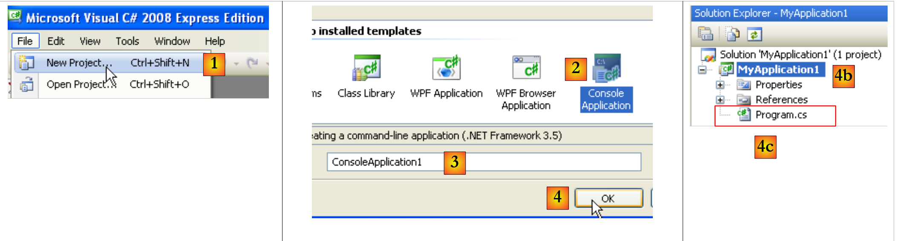
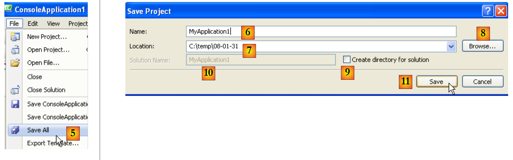
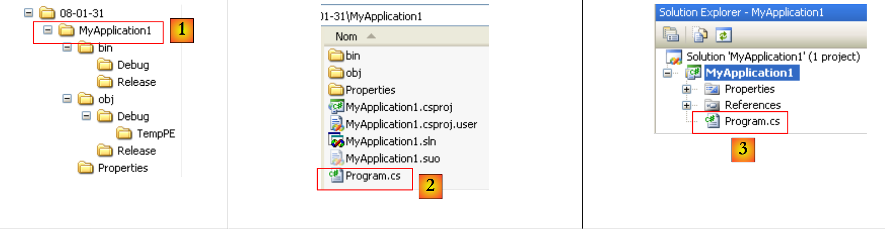
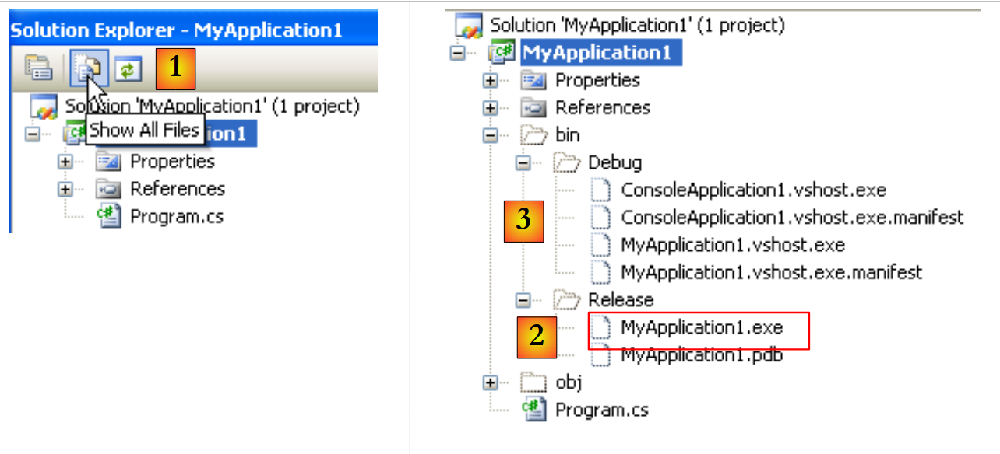
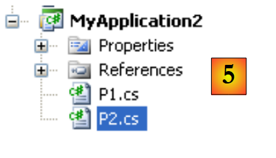

2. تثبيت Visual C# 2008
في نهاية يناير 2008، أصبحت إصدارات Express من Visual Studio 2008 متاحة للتنزيل [2] على العنوان التالي [1]: [http://msdn2.microsoft.com/en-fr/express/future/default(en-us).aspx] :
 |
- [1]: عنوان التنزيل
- [2]: علامة التبويب "التنزيلات"
- [3]: تنزيل C# 2008
عند تثبيت C# 2008، ستقوم أيضًا بتثبيت:
- إطار عمل .NET 3.5
- SGBD SQL Server Compact 3.5
- وثائق MSDN
لإنشاء أول برنامج لك باستخدام C# 2008، اتبع الخطوات التالية بعد تشغيل C# :
 |
- [1]: اختر الخيار "ملف / مشروع جديد"
- [2]: اختر تطبيق Console
- [3]: قم بتسمية المشروع - سيتم تغيير الاسم أدناه
- [4]: قم بالتحقق
- [4ب]: تم إنشاء المشروع
- [4c]: Program.cs هو برنامج C# الذي تم إنشاؤه افتراضيًا في المشروع.
 |
- لم تسأل الخطوة 1 عن مكان حفظ المشروع. إذا لم نقم بأي شيء، فسيتم حفظه في موقع افتراضي قد لا يناسبنا. تُستخدم الخيار [5] لحفظ المشروع في مجلد محدد.
- يمكنك تسمية المشروع باسم جديد في [6] وتحديد مجلده في [7]. للقيام بذلك، يمكنك استخدام [8]. إذا اخترت Ici، فسيتم حفظ المشروع في المجلد [C:\temp\08-01-31MyApplication1].
- عن طريق تحديد [9]، يمكنك إنشاء مجلد للحل المسمى في [10]. إذا كان Solution1 هو اسم الحل:
- سيتم إنشاء مجلد [C:\temp\08-01-31\Solution1] للحل Solution1
- سيتم إنشاء مجلد [C:\temp\08-01-31\Solution1\MyApplication1] للمشروع MyApplication1. هذا الحل مناسب تمامًا للحلول المكونة من عدة مشاريع. سيكون لكل مشروع مجلد فرعي في مجلد الحل.
 |
- في [1]: نافذة ملفات مشروع MyApplication1
- في [2]: محتوياته
- في [3]: المشروع في مستكشف المشاريع في Visual Studio
دعونا نعدل كود ملف [Program.cs] [3] على النحو التالي:
using System;
namespace ConsoleApplication1 {
class Program {
static void Main(string[] args) {
Console.WriteLine("1er essai avec C# 2008");
}
}
}
- السطر 3: مساحة اسم الفئة المحددة في السطر 4. الاسم الكامل للفئة المحددة في السطر 4 هو ConsoleApplication1.Program.
- الأسطر 5-7: الطريقة الثابتة Main التي يتم تنفيذها عند تنفيذ
- السطر 6: عرض الشاشة
يمكن تشغيل البرنامج على النحو التالي:
 |
- [Ctrl-F5] لتشغيل المشروع، في [1]
- في [2]، يتم الحصول على عرض وحدة التحكم.
أدى التنفيذ إلى إضافة ملفات إلى:
 |
- في [1]، عرض جميع ملفات المشروع
- في [2]: يحتوي المجلد [Release] على الملف القابل للتنفيذ للمشروع [MyApplication1.exe].
- في [3]: المجلد [Debug]، الذي سيحتوي أيضًا على ملف تنفيذي [MyApplication1.exe] للمشروع لو تم تشغيله في وضع [Debug] (مفتاح F5 بدلاً من Ctrl-F5). هذا الملف التنفيذي يختلف عن الملف الذي تم الحصول عليه في وضع [Release]. فهو يحتوي على معلومات إضافية تتيح إجراء عملية التصحيح.
يمكن إضافة مشروع جديد إلى الحل الحالي:
 |
- [1]: انقر بزر الماوس الأيمن على الحل (وليس المشروع) / Add / New Project
- [2]: حدد نوع التطبيق
- [3]: المجلد الافتراضي هو المجلد الذي يحتوي على مجلد المشروع الحالي [MyApplication1]
- [4]: قم بتسمية المشروع الجديد
يصبح للحل بعد ذلك مشروعان:
 |
- [1]: المشروع الجديد
- [2]: عند تنفيذ الحل باستخدام (F5 أو Ctrl-F5)، يتم تنفيذ أحد المشروعين. وهذا ما يُسمى [2].
يمكن أن يحتوي المشروع على عدة فئات قابلة للتنفيذ (تحتوي على طريقة Main). في هذه الحالة، يجب تحديد الفئة المراد تنفيذها عند تشغيل المشروع:
 |
- [1، 2]: نسخ/لصق ملف [Program.cs]
- [3]: نسخ/لصق النتيجة
- [4، 5]: إعادة تسمية الملفين
 |
الفئة P1 (السطر 4):
using System;
namespace MyApplication2 {
class P1 {
static void Main(string[] args) {
}
}
}
فئة P2 (السطر 4):
using System;
namespace MyApplication2 {
class P2 {
static void Main(string[] args) {
}
}
}
يحتوي مشروع [MyApplication2] الآن على فئتين بهما طريقة ثابتة Main. يجب إخبار المشروع بأيهما:
 |
- في [1]: خصائص المشروع [MyApplication2]
- في [2]: حدد الفئة المراد تنفيذها عند تشغيل المشروع (F5 أو Ctrl-F5)
- في [3]: نوع الملف القابل للتنفيذ الناتج - هنا سيؤدي تطبيق Console إلى إنتاج ملف .exe.
- في [4]: اسم الملف القابل للتنفيذ الناتج (بدون الامتداد .exe)
- في [5]: مساحة الاسم الافتراضية. هذه هي المساحة التي سيتم إنشاؤها في كود كل فئة جديدة تضاف إلى المشروع. يمكن بعد ذلك تغييرها مباشرة في الكود، إذا لزم الأمر.